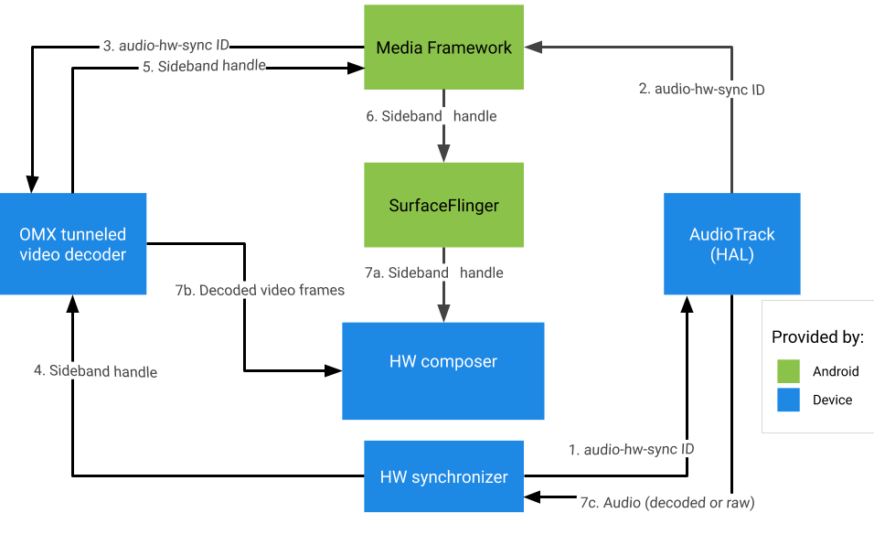

You can implement multimedia tunneling in Android framework 5.0 and higher. Although multimedia tunneling isn't required for Android TV, it provides the best experience for ultra-high definition (4K) content.
Background
The Android media framework handles audio/video content in four ways:
- Pure software (local decoding): The application processor (AP) locally decodes audio to pulse-code modulation (PCM) without special acceleration. Always used for Ogg Vorbis, and used for MP3 and AAC when there's no compressed offload support.
- Compressed audio offload sends compressed audio data directly to the digital signal processor (DSP) and keeps the AP off as much as possible. Use for playing music files with the screen off.
- Compressed audio passthrough sends compressed audio (specifically AC3 and E-AC3) directly over HDMI to an external TV or audio receiver, without decoding it on the Android TV device. The video portion is handled separately.
- Multimedia tunneling sends compressed audio and video data together. When the encoded stream is received by the video and audio decoders, it doesn’t go back to the framework. Ideally, the stream doesn’t interrupt the AP.
Approach comparison
| Pure software | Compressed audio offload | Compressed audio passthrough | Multimedia tunneling | |
|---|---|---|---|---|
| Decode location | AP | DSP | TV or audio/video receiver (AVR) | TV or AVR |
| Handles audio | yes | yes | yes | yes |
| Handles video | yes | no | no | yes |
For application developers
Create a SurfaceView, get an audio session ID, then create the
AudioTrack and MediaCodec instances to provide the necessary timing and
configurations for playback and video frame decoding.
A/V sync
In multimedia tunneling mode, audio and video are synchronized on a master clock. In Android the audio clock is the master clock used for A/V playback.
If a tunneled video MediaCodec instance is linked to the HW_AV_SYNC
instance in AudioTrack, the implicit clock derived from the number of presented audio
samples is used to restrict when each video frame is presented, based on the actual video frame
Presentation Time Stamp (PTS).
API call flow
- Create a SurfaceView.
SurfaceView sv = new SurfaceView(mContext); - Get an audio session ID. This unique ID is used in creating the audio track
(
AudioTrack). It's passed to the media codec (MediaCodec) and used by the media framework to link the audio and video paths.AudioManager am = mContext.getSystemService(AUDIO_SERVICE); int audioSessionId = am.generateAudioSessionId(); - Create
AudioTrackwith HW A/V syncAudioAttributes.The audio policy manager asks the hardware abstraction layer (HAL) for a device output that supports
FLAG_HW_AV_SYNC, and creates an audio track directly connected to this output with no intermediate mixer.AudioAttributes.Builder aab = new AudioAttributes.Builder(); aab.setUsage(AudioAttributes.USAGE_MEDIA); aab.setContentType(AudioAttributes.CONTENT_TYPE_MOVIE); aab.setFlag(AudioAttributes.FLAG_HW_AV_SYNC); AudioAttributes aa = aab.build(); AudioTrack at = new AudioTrack(aa); - Create a video
MediaCodecinstance and configure it for tunneled video playback.// retrieve codec with tunneled video playback feature MediaFormat mf = MediaFormat.createVideoFormat(“video/hevc”, 3840, 2160); mf.setFeatureEnabled(CodecCapabilities.FEATURE_TunneledPlayback, true); MediaCodecList mcl = new MediaCodecList(MediaCodecList.ALL_CODECS); String codecName = mcl.findDecoderForFormat(mf); if (codecName == null) { return FAILURE; } // create codec and configure it mf.setInteger(MediaFormat.KEY_AUDIO_SESSION_ID, audioSessionId); MediaCodec mc = MediaCodec.createCodecByName(codecName); mc.configure(mf, sv.getSurfaceHolder().getSurface(), null, 0); - Decode video frames.
mc.start(); for (;;) { int ibi = mc.dequeueInputBuffer(timeoutUs); if (ibi >= 0) { ByteBuffer ib = mc.getInputBuffer(ibi); // fill input buffer (ib) with valid data ... mc.queueInputBuffer(ibi, ...); } // no need to dequeue explicitly output buffers. The codec // does this directly to the sideband layer. } mc.stop(); mc.release(); mc = null;
Note: You may switch the order of steps 3 and 4 in this process, as seen in the two figures below.
For device manufacturers
OEMs should create a separate video decoder OpenMAX IL (OMX) component to support tunneled video
playback. This OMX component must advertise that it's capable of tunneled playback (in
media_codecs.xml).
<Feature name=”tunneled-playback” required=”true” />
The component must also support an OMX extended parameter
OMX.google.android.index.configureVideoTunnelMode that uses a
ConfigureVideoTunnelModeParams structure.
struct ConfigureVideoTunnelModeParams {
OMX_U32 nSize; // IN
OMX_VERSIONTYPE nVersion; // IN
OMX_U32 nPortIndex; // IN
OMX_BOOL bTunneled; // IN/OUT
OMX_U32 nAudioHwSync; // IN
OMX_PTR pSidebandWindow; // OUT
};
When a tunneled MediaCodec creation request is made, the framework configures the
OMX component in tunneled mode (by setting bTunneled to OMX_TRUE) and
passes the associated audio output device created with an AUDIO_HW_AV_SYNC flag to the
OMX component (in nAudioHwSync).
If the component supports this configuration, it should allocate a sideband handle to this codec
and pass it back via the pSidebandWindow member. A sideband handle is an ID tag for the
tunneled layer that lets the Hardware Composer
(HW Composer) identify it. If the component doesn't support this configuration, it should set
bTunneled to OMX_FALSE.
The framework retrieves the tunneled layer (the sideband handle) allocated by the OMX component
and passes it to the HW Composer. This layer's compositionType gets set to
HWC_SIDEBAND. (See hardware/libhardware/incl
ude/hardware/hwcomposer.h.)
The HW Composer is responsible for receiving new image buffers from the stream at the appropriate time (for example, synchronized to the associated audio output device) compositing them with the current contents of other layers, and displaying the resulting image. This happens independent of the normal prepare/set cycle. The prepare/set calls happen only when other layers change, or when properties of the sideband layer (such as position or size) change.
Configuration
frameworks/av/services/audioflinger/Audiof linger.cpp
The HAL returns the HW_AV_SYNC ID as a character string decimal
representation of a 64-bit integer. (Reference frameworks/av/services/audioflinger/Audioflinger.cpp.)
audio_hw_device_t *dev = mPrimaryHardwareDev->hwDevice();
char *reply = dev->get_parameters(dev, AUDIO_PARAMETER_HW_AV_SYNC);
AudioParameter param = AudioParameter(String8(reply));
int hwAVSyncId;
param.getInt(String8(AUDIO_PARAMETER_HW_AV_SYNC), hwAVSyncId);
frameworks/av/services/audioflinger/Threads.cpp
The audio framework must find the HAL output stream to which this session ID corresponds, and
query the HAL for the hwAVSyncId via set_parameters.
mOutput->stream->common.set_parameters(&mOutput->stream->common,
AUDIO_PARAMETER_STREAM_HW_AV_SYNC=hwAVSyncId);
OMX decoder configuration
MediaCodec.java
The audio framework finds the corresponding HAL output stream for this session ID and retrieves
the audio-hw-sync ID by querying the HAL for the
AUDIO_PARAMETER_STREAM_HW_AV_SYNC flag via get_parameters.
// Retrieve HW AV sync audio output device from Audio Service
// in MediaCodec.configure()
if (entry.getKey().equals(MediaFormat.KEY_AUDIO_SESSION_ID)) {
int sessionId = 0;
try {
sessionId = (Integer)entry.getValue();
}
catch (Exception e) {
throw new IllegalArgumentException("Wrong Session ID Parameter!");
}
keys[i] = "audio-hw-sync";
values[i] = AudioSystem.getAudioHwSyncForSession(sessionId);
}
// ...
This HW sync ID is passed to the OMX tunneled video decoder using the custom parameter
OMX.google.android.index.configureVideoTunnelMode.
ACodec.cpp
After you get the audio hardware sync ID, ACodec uses it to configure the tunneled video decoder so the tunneled video decoder knows which audio track to synchronize.
// Assume you're going to use tunneled video rendering.
// Configure OMX component in tunneled mode and grab sideband handle (sidebandHandle) from OMX
// component.
native_handle_t* sidebandHandle;
// Configure OMX component in tunneled mode
status_t err = mOMX->configureVideoTunnelMode(mNode, kPortIndexOutput,
OMX_TRUE, audioHwSync, &sidebandHandle);
OMXNodeInstance.cpp
The OMX component is configured by the configureVideoTunnelMode method above.
// paraphrased
OMX_INDEXTYPE index;
OMX_STRING name = const_cast<OMX_STRING>(
"OMX.google.android.index.configureVideoTunnelMode");
OMX_ERRORTYPE err = OMX_GetExtensionIndex(mHandle, name, &index);
ConfigureVideoTunnelModeParams tunnelParams;
InitOMXParams(&tunnelParams);
tunnelParams.nPortIndex = portIndex;
tunnelParams.bTunneled = tunneled;
tunnelParams.nAudioHwSync = audioHwSync;
err = OMX_SetParameter(mHandle, index, &tunnelParams);
err = OMX_GetParameter(mHandle, index, &tunnelParams);
sidebandHandle = (native_handle_t*)tunnelParams.pSidebandWindow;
ACodec.cpp
After the OMX component is configured in tunneled mode, the sideband handle is associated with the rendering surface.
err = native_window_set_sideband_stream(nativeWindow.get(),
sidebandHandle); if (err != OK) { ALOGE("native_window_set_sideband_stream(%p) failed! (err %d).",
sidebandHandle, err); return err; }
Then the maximal resolution hint, if present, is sent to the component.
// Configure max adaptive playback resolution - as for any other video decoder
int32_t maxWidth = 0, maxHeight = 0;
if (msg->findInt32("max-width", &maxWidth) &&
msg->findInt32("max-height", &maxHeight)) {
err = mOMX->prepareForAdaptivePlayback(
mNode, kPortIndexOutput, OMX_TRUE, maxWidth, maxHeight);
}
Pause support
Android 5.0 and lower doesn't include pause support. You can pause tunneled-playback only by A/V starvation, but if the internal buffer for video is large (for example, there's 1 second of data in the OpenMax component), it will make pause look non-responsive.
In Android 5.1 and higher, AudioFlinger supports pause and resume for direct (tunneled) audio outputs. If the HAL implements pause/resume, track pause/resume is forwarded to the HAL.
The pause, flush, resume call sequence is respected by executing the HAL calls in the playback thread (same as offload).
Implementation suggestions
Audio HAL
Devices supporting tunneled video playback should have at least one audio output stream profile
with the flags FLAG_HW_AV_SYNC and AUDIO_OUTPUT_FLAG_DIRECT in its
audio_policy.conf file. These flags are used to set the system clock from the audio
clock.
OMX
Device manufacturers should have a separate OMX component for tunneled video playback. Manufacturers may have additional OMX components for other types of audio and video playback, like secure playback.
This component should specify 0 buffers (nBufferCountMin,
nBufferCountActual) on its output port.
The tunneled component must also implement the
OMX.google.android.index.prepareForAdaptivePlayback setParameter extension.
The tunneled component must specify its capabilities in the media_codecs.xml file
and declare the tunneled-playback feature. It should also clarify any limitations on frame size,
alignment, or bitrate.
<MediaCodec name="OMX.OEM_NAME.VIDEO.DECODER.AVC.tunneled"
type="video/avc" >
<Feature name="adaptive-playback" />
<Feature name="tunneled-playback" required=”true” />
<Limit name="size" min="32x32" max="3840x2160" />
<Limit name="alignment" value="2x2" />
<Limit name="bitrate" range="1-20000000" />
...
</MediaCodec>
If the same OMX component is used to support tunneled and non-tunneled decoding, then it should leave the tunneled-playback feature as non-required. Both tunneled and non-tunneled decoders then have the same capability limitations.
<MediaCodec name="OMX.OEM_NAME.VIDEO.DECODER.AVC" type="video/avc" >
<Feature name="adaptive-playback" />
<Feature name="tunneled-playback" />
<Limit name="size" min="32x32" max="3840x2160" />
<Limit name="alignment" value="2x2" />
<Limit name="bitrate" range="1-20000000" />
...
</MediaCodec>
HW Composer
When there's a tunneled layer (a layer with HWC_SIDEBAND
compositionType) on a display, the layer’s sidebandStream is the sideband
handle allocated by the OMX video component.
The HW Composer synchronizes decoded video frames (from the tunneled OMX component) to the
associated audio track (with the audio-hw-sync ID). When a new video frame becomes
current, the HW Composer composites it with the current contents of all layers received during the
last prepare/set call, and displays the resulting image. The prepare/set calls happen only when
other layers change, or when properties of the sideband layer (like position or size) change.
Figure 4 represents the HW Composer working with the HW (or kernel/driver) synchronizer, to combine video frames (7b) with the latest composition (7a) for display at the correct time, based on audio (7c).
